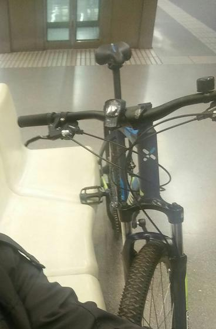

Bicicletas de Jesus Couto > BTWIN Nueva Azul MTB 520 C2 ROBADA
Robada: BTWIN Nueva Azul MTB 520 C2 ROBADA
Recompensa: 20 €
Actualizado el 02/04/2016
Contactar
BICI ROBADA
Fecha del robo: 01/04/2016 20:45 • Donde: Barcelona (Barcelona)Actualizado el 02/04/2016
Robada en CC la maquinista, azul marino rockrider 520 C2
- 
-
Propietario
Jesus CoutoFicha principal
Decathlon Rockrider 520 C2 [2016]
Categoría: MTB
Situación: Robada
Descripción:
Frenos de disco, suspencion delantera
Vista 283 veces (desde el 01/04/2016)
Creada el 01/04/2016 22:09
Publicidad